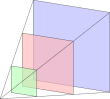

Camera, phép chiếu và pipeline hình học¶
Camera ảo¶
Camera được xác định bởi vị trí mắt \(\bm{e}\), điểm ngắm \(\bm{t}\) và một hướng lên tham chiếu \(\bm{u}_0\). Với hệ tọa độ tay phải và camera nhìn theo trục \(-z\), đặt
Ba vectơ \(\bm{r}, \bm{u},-\bm{f}\) tạo thành một cơ sở trực chuẩn của camera. Nếu \(\bm{f}\) gần song song \(\bm{u}_0\), tích có hướng gần \(0\) và phải chọn một up vector khác.
View matrix đổi tọa độ thế giới sang tọa độ camera:
Đây là nghịch đảo của world transform của camera. Thay vì di chuyển camera trong thế giới, ta biến đổi toàn bộ thế giới ngược lại quanh camera.
Frustum¶
Phép chiếu phối cảnh chỉ giữ phần không gian nằm giữa near plane \(n\) và far plane \(f\), đồng thời nằm trong góc nhìn. Miền này là một hình chóp cụt gọi là view frustum.

Hình 29 Frustum được giới hạn bởi near plane, far plane và bốn mặt phẳng bên.¶
Near plane phải dương. Tỉ số \(f/n\) quá lớn làm giảm độ chính xác của depth buffer; vì vậy nên đẩy near plane ra xa camera ở mức ứng dụng cho phép thay vì chỉ tăng far plane.
Phép chiếu trực giao¶
Phép chiếu trực giao bỏ một tọa độ theo hướng nhìn. Trong trường hợp đơn giản,
Với hộp nhìn \([l, r] \times [b, t] \times [-f,-n]\), một orthographic projection tay phải đưa hộp đó về normalized device coordinates:
Các đường song song vẫn song song và kích thước không phụ thuộc độ sâu. Phép chiếu này phù hợp cho bản vẽ kỹ thuật, UI và bài toán đa diện trong Phép chiếu đa diện và khử đường khuất.
Phép chiếu phối cảnh¶
Từ các tam giác đồng dạng, điểm \((x, y, z)\) trong camera space có tọa độ ảnh tỉ lệ với
Đặt \(\theta\) là field of view theo chiều dọc và \(a = w/h\) là aspect ratio. Với NDC có độ sâu trong \([-1, 1]\), một perspective matrix tay phải là
Sau phép nhân, đỉnh có clip coordinates \((x_c, y_c, z_c, w_c)\). Phép chia phối cảnh
tạo hiệu ứng vật ở xa nhỏ hơn. Quy ước trục, khoảng NDC của \(z\), thứ tự ma trận và dấu trong projection matrix khác nhau giữa các API; các công thức chỉ đúng khi dùng nhất quán một quy ước.
Clipping trong tọa độ thuần nhất¶
Clipping nên được thực hiện trước phép chia phối cảnh. Với NDC \([-1, 1]^3\), một điểm nằm trong canonical view volume khi
Một primitive hoàn toàn ngoài cùng một mặt phẳng bị loại. Primitive cắt biên phải được tạo thêm đỉnh giao; thuộc tính tại đỉnh mới được nội suy cùng tham số giao.
Viewport transform¶
Với viewport có góc trái trên \((x_0, y_0)\), chiều rộng \(W\), chiều cao \(H\), ánh xạ từ NDC sang pixel thường có dạng
Dấu trừ trong công thức \(Y\) xuất hiện khi tọa độ màn hình hướng xuống. Tọa độ độ sâu được ánh xạ sang khoảng mà depth buffer sử dụng, thường là \([0, 1]\).
Back-face culling¶
Một mesh kín thường chỉ cần vẽ mặt hướng về camera. Trong screen space, diện tích có hướng của tam giác là
Dấu của \(A_2\) xác định winding order. Sau khi chọn chiều kim đồng hồ hoặc ngược chiều kim đồng hồ là mặt trước, tam giác có dấu ngược lại có thể bị loại. Culling chỉ đúng khi mesh có winding nhất quán và world transform không đảo orientation ngoài dự kiến.
Pipeline hình học hiện đại¶
Một pipeline rasterization có thể hiểu độc lập API qua các giai đoạn:
Input assembly: đọc vertex/index buffer và tạo primitive.
Vertex processing: áp dụng \(M_{\mathrm{proj}} M_{\mathrm{view}} M_{\mathrm{world}}\) và tính các thuộc tính theo đỉnh.
Tessellation/geometry processing tùy chọn: sinh hoặc thay đổi primitive.
Clipping và culling: giới hạn primitive vào frustum và loại mặt sau.
Rasterization: tìm các sample được tam giác phủ và nội suy thuộc tính.
Fragment/pixel shading: tính màu, pháp tuyến hoặc dữ liệu render target.
Per-sample operations: depth/stencil test và blending.
Phần cố định của API có thể thay đổi, nhưng chuỗi toán học model--view--projection, clipping, nội suy và kiểm tra visibility vẫn giữ nguyên.